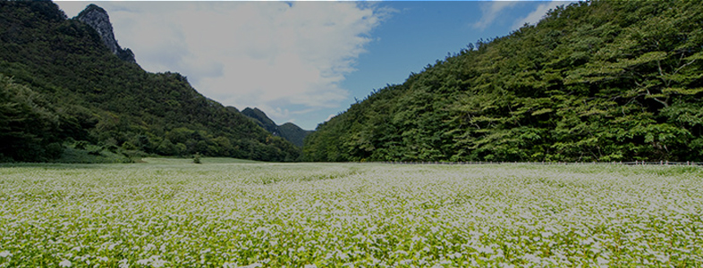
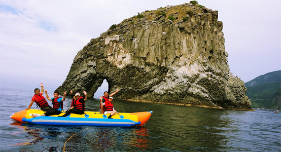
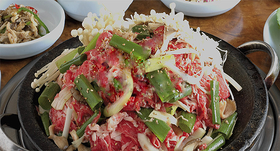
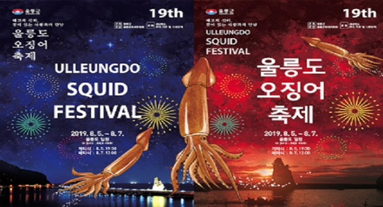

울릉도 문화관광
지역소개
-
공지사항
2017년 정유년(丁酉年) 해맞이 행사 알림
다사다난 했던 2016년 병신년 한해를 정리하고, 대한민국에서 가장먼저 해가 떠오르는 민족의 섬 도도를 품에 안은 우리 군에서 2017년 정유년 해맞이 행사를 통해 새로운 출발을 다집하고자 다음과 같은 해맞이 행사를 개최하오니 주민 여러분의 많은 참여 바랍니다.
2016-12-07 -
공지사항
행남해안산책로 구간 통제 안내
행남 해안산책로 구간 통제 안내 행남 해안산책로 교량 및 안전시설물 유실로 인하여 안전사고 방지를 위해 아래와 같이 부득이 일부 구간을 일시 통제하오니 양해하여 주시기 바랍니다.
2016-04-22 -
공지사항
썬스타호(유선사업) 출항 시간 변경 알림
썬스타호의 출항시간이 아래와 같이 변경되었으니 관광객 및 주 민들께서는 참고하시기 바랍니다. 가. 신 청 인 : 울릉도유람선(주) 대표 김혜영 나. 선박제원 : 썬스타호(유선,243톤, 여객정원 404명) 다. 유선사업 면허 변경 사항
2016-04-19 -
공지사항
섬목페리호(도선) 영업 재개 알림
울릉도해운(주)의 섬목페리호가 아래와 같이 영업을 재개하오니 주민과 관광객 여러분께서는 참고하시기 바랍니다 가. 신 청 인 (사업자) : 울릉도해운(주) 대표 황병욱, 하기룡 나. 선박제원 : 섬목페리호(도선, 104톤, 여객정원 136명) 다. 영업재개일 : 2016년 4월9일(토)
2016-04-9 -

여행정보
울릉도 생태길
- 
- 
- 